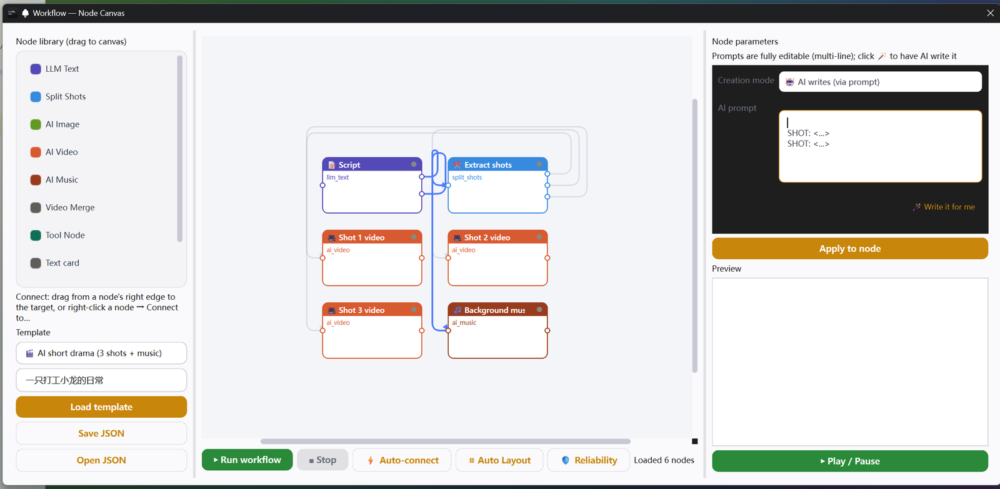

它能做什么
10 种节点，覆盖全流程
LLM 文本、分镜拆解、AI 配图、AI 视频、AI 音乐、视频合成、工具节点、文本卡片、本地图片、本地音乐。
拖拽 + 连线
左侧节点库拖到画布，按住节点右侧拖到目标即可连线；也有「⚡ 自动连线」按类型逻辑一次接好。
自动排版
「⌗ 自动排版」按依赖关系分层排列，节点散了一键归位。
每步即时预览
点任意节点，右侧立刻显示该节点的文本 / 图片 / 视频 / 音频产物，带播放器。
提示词完全可 DIY
每个文本参数都是多行编辑器，想怎么写就怎么写；支持 {{节点名}} 占位符引用上游产物。
🪄 AI 帮我写提示词
给一句话需求，AI 按节点类型自动写出专业提示词（分镜师 / 美术指导 / 音乐制作人角色各有专用模板），生成后仍可继续手改。
模板一键开跑
内置 AI 短剧、音乐单曲、主题概念图等现成流程，改个主题就能跑。
可靠性分析
「🛡 可靠性分析」检查缺参数、缺 Key、断链、成环，给出评分和修复建议。
怎么用
- 1打开侧栏「工作流」，从左侧拖入需要的节点（或直接「载入模板」）。
- 2连线：按住节点右侧拖到目标节点；懒人可直接点「⚡ 自动连线」。
- 3点节点，在右侧把提示词改成本次任务的内容（手写或点 🪄 让 AI 写）。
- 4「▶ 运行工作流」跑全流程，单节点失败不影响其余分支。
- 5画布可存成 JSON，「保存 JSON / 打开 JSON」方便复用与分享。
技术亮点
- 节点用扁平 dict + deps 表达依赖，引擎按拓扑串行执行，失败分支自动跳过下游。
- 占位符引用上游产物，支持取列表第 N 项（如分镜第 1 个镜头）。
- 参数按类型自动归一（时长转整数、纯音乐转布尔），避免云端接口报类型错。
- LLM 节点返回值做错误标记识别，避免把报错文本当成剧本流到下游。
看一眼
